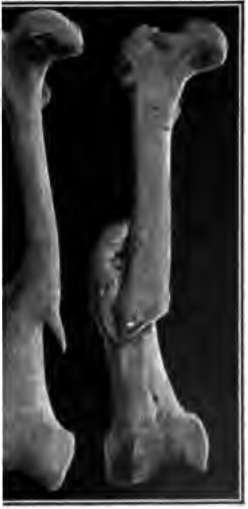
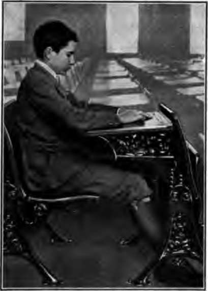
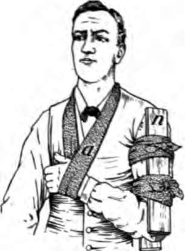
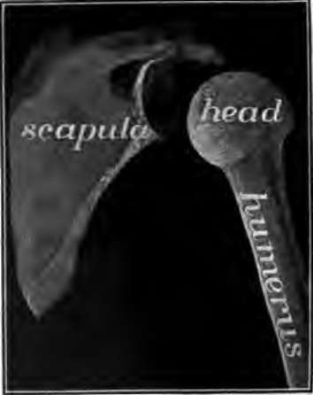
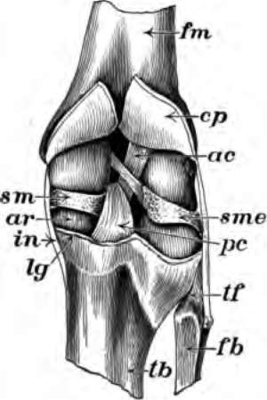

The Bones. Continued
Description
This section is from the book "The Human Body And Health", by Alvin Davison. Also available from Amazon: The Human Body and Health.
The Bones. Continued
Brooken Bones
A k in a bone is called vcture. As the bones lildren bend easily, are seldom broken ompletely, but are ked somewhat like lgh stick when bent. l an injury is known greerir-stick fracture. n the bone of an person is broken, ends usually separate a little owing to the pull of the muscles. In order to set the bone properly the two ends must be brought together and held firmly in place by a thin board or sheet of metal bandaged on the limb.
Fig. 96. Thigh bones grown ether after being broken. one on the right was properly cared for.
Fig. 95. Proper position in school to prevent round shoulders.
First Care Of A Broken Bone
No one but a good surgeon is able to set a broken bone successfully. However, if a person with a fracture must be moved from the place of accident, it is wise to hold the broken bones in place by binding firmly on either side of the fracture, wrapped in clean cloth, a narrow board or flat stick.
Fig. 97. The way to hold the broken bone of the arm in place until the doctor comes.
Fig. 98. Ball and socket joint at the shoulder.
In young persons, broken bones usually knit together in three or four weeks, but in persons over sixty years of age, healing may require several months.
The Joints
The juncture of two or more bones is a joint, or articulation. The two general kinds of joints are the movable and the immovable. The immovable joints occur between the bones of the skull. The two important kinds of movable joints are the ball and socket , joint, like that at the shoulder and hip, and the hinge joint, as seen at the knee and elbow.
In the movable joints, the ends of the bones are covered with a thin pad of gristle. Several tough bands of white stringy tissue called ligaments hold the bones in place and form a covering for the joint. This covering is lined with a tender membrane. It forms a thick fluid, like the white of egg. This is used to keep the joint moist and in smooth working condition.
Strain And Sprain
By bending a joint too far or pushing the end of a bone to one side, the ligaments may be stretched or even torn. This results in swelling and tenderness called a strain.
A severe strain is a sprain. The best treatment to give at once, is to place the injured part in hot water or wrap it in cloths wrung out of very hot water, and change them every few minutes. At the end of a half-hour, the joint should be massaged by rubbing it toward the body, in order to move the collected lymph away to the veins. Unless the ligaments are torn, complete rest is not so helpful as careful exercise and frequent massaging.
Dislocation Of Bones
When at a joint, the end of one bone is forced backward, forward or to one side of the other bone, so far that it does not slip back into place, it is said to be dislocated. The ligaments may be somewhat torn or stretched. The patient should be placed in an easy position and a physician sent for at once, as the parts become very sore in a few hours. The bones at the knee and shoulder joints are the ones most frequently dislocated.
Fig. 99. A knee joint cut open from behind to show the ligaments, cp, ligament cut off at lg.
Effect Of Alcohol And Other Narcotics On The Bones
The blood furnishes the material out of which the bones are made. The blood receives its food for the body from the digestive system. The digestive system works properly only when the nervous system, which governs it, is in good condition. Tobacco, alcoholic drinks, and other narcotics are known to affect seriously the nervous, digestive and circulatory systems.
The organs removing the poisonous waste from the growing bones are often made unfit to perform their duties properly by the continued use of narcotics, especially those containing alcohol. This unremoved waste then affects the growing bones by slowing the living action of the cells. In many young persons, using much tobacco, the bones grow about one fourth slower than in healthy boys and girls. This fact has been clearly proved by many careful measurements of normal healthy boys, and those using tobacco regularly.
Practical Questions
1. Of what use are the bones? 2. Give the three parts of the skeleton. 3. Name the bones in the arm and forearm. 4. Name the bones of the leg. 5. How many bones in each toe and finger? 6. Name the bones on the side of the head. 7. Of what is bone made? 8. What is the periosteum? 9. Why should you sit and walk erect? 10. What is a fracture? 11. Describe the first care to be given a broken bone. 12. Name three kinds of joints. 13. Which joints allow motion in more than two directions? 14. What is a ligament? 15. What is a sprain?
Continue to: